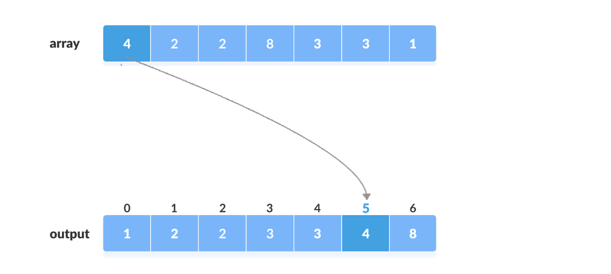
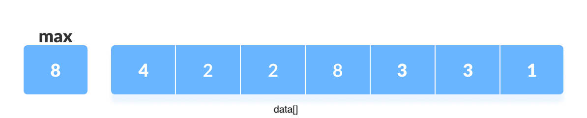
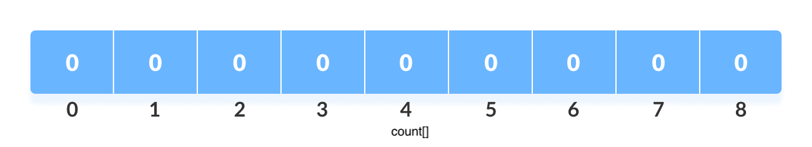
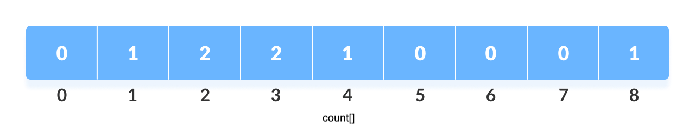
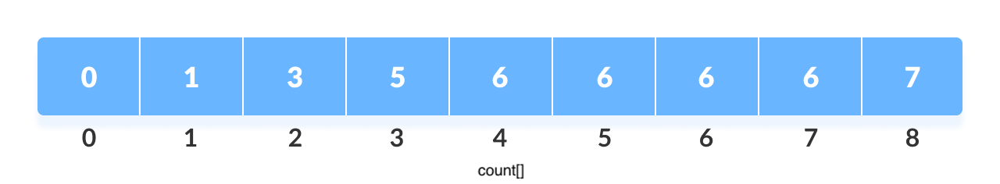
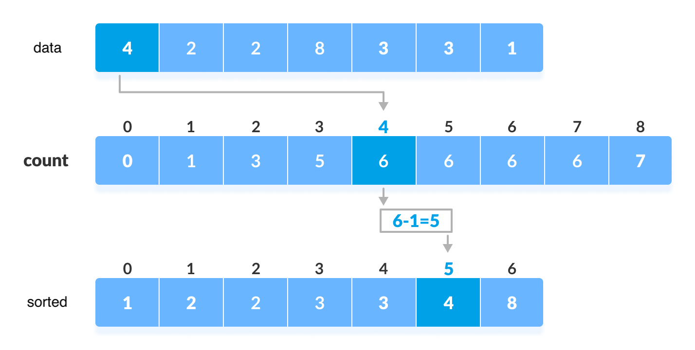

计数排序（Counting Sort）
#面经 #算法与数据结构 计数排序是一种通过对每个数组中的每个元素进行相应的计数统计，通过计数值确定元素的正确位置的排序算法。计数排序需要知道待排序数据的取值范围，以方便申请辅助空间，这是计数排序的一个缺点。
计数的规则：如果数组中共有 i 个元素小于等于 x，那么 x 的排序后的位置为 i。
如下图，有（2 2 3 3 1）5 个元素小于 4，则排序完成后 4 的最终索引位置为 5。

算法步骤
以下算法待排序数据大于等于 0。
-
获得待排序数据的最大值 
-
申请辅助空间 count 数组，大小为 (max+1)，并且初始化为 0。 
-
统计每个元素的频次：
如 2 出现了 2 次，则 count[2] = 2；4 只出现了 1 次，count[4] = 1。依次类推 
- 累加计数——计数排序算法的核心，依次累加后 count 数组如下：

- 在
count[]数组中寻找每个元素的索引

- 每确定一个元素的最终位置后，将
count[]减 1。 这是因为出现元素的值相同的情况时，每当将一个 data[i] 放入 sorted[] 数组中时，都应使 count[data[i]] 的值减 1。这样，当下一个值等于 data[i] 的待排序元素出现的时候，在排序过的 sorted 数组中，这个元素将会被直接放到 sorted[i] 的前一个位置上。从后向前的，计数排序的是稳定的。如果从前向后排序，重复元素的顺序，刚好相反，所以就不是稳定的算法，但如果不关注稳定性，那么结果都是正确的。
完整算法
// Counting sort in C++ programming
#include <iostream>
#include <cstdlib>
using namespace std;
void counting_sort(int data[], int size) {
int* sorted = new int[size];
int max = data[0];
for (int i = 1; i < size; i++) {
if (data[i] > max)
max = data[i];
}
int* count = new int[max+1]; // 初值为 0
// 记录频次
for (int i = 0; i < size; i++)
count[data[i]]++;
// 累加计数
for (int i = 1; i <= max; i++)
count[i] += count[i - 1];
// 确定最终位置
for (int i = size - 1; i >= 0; i--) {
sorted[count[data[i]] - 1] = data[i];
count[data[i]]--;
}
for (int i = 0; i < size; i++)
data[i] = sorted[i];
delete [] sorted;
delete [] count;
}
void print_data(int data[], int size) {
for (int i = 0; i < size; i++)
cout << data[i] << " ";
cout << endl;
}
// NOTES: delete[] data
int* generate_data(int size) {
srand(time(nullptr));
int* data = new int[size];
for (int i = 0; i < size; ++i)
data[i] = rand() % 100;
return data;
}
int main() {
int size = 20;
int* data = generate_data(size);
print_data(data, size);
counting_sort(data, size);
print_data(data, size);
delete [] data;
return 0;
}